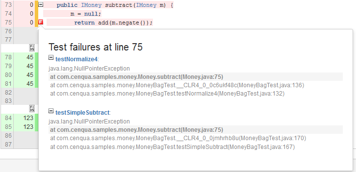

Stack Trace Navigation
Clover's Stack Trace Navigation feature provides quick, in-context information about unit test failures.
When a test failure occurs, the exception that caused the failure is captured and analyzed by Clover. At each source line that propagated the exception, Clover places an icon. Clicking on this icon provides a popup window showing all exceptions that were propagated from this line, and the full stack trace for that exception. This allows a developer to quickly navigate up or down the stack trace to investigate the cause of the failure.
